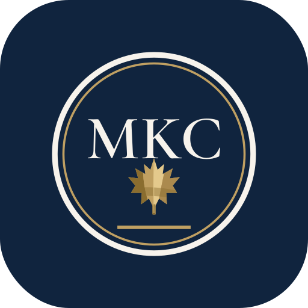

MKC Immigration Solutions Inc
About MKC
Personal guidance from Morris King Catalig in Mississauga (Streetsville), Ontario.
About
Personal guidance from Morris King Catalig
Morris King Catalig is an immigration consultant at MKC Immigration Solutions Inc in Mississauga, a role listed publicly since October 2018. Clients’ reviews repeatedly describe a kind, patient and professional approach — and support that goes the extra mile at each stage.
- Based in Mississauga (Streetsville), Ontario
- Careful, thorough approach to documentation, as described by clients
- Clear next steps, explained in plain language

Why choose MKC
Professional help, without the overwhelm.
Immigration paperwork can feel complex. MKC’s role is to help you understand what is being asked, prepare your documents carefully, and know what happens next.
- Step-by-step guidance from first conversation onward
- Responsive answers to your questions, as described by clients
- Support across tourist visa, student visa, work permit, residence and citizenship stages
CICCCollege of Immigration and Citizenship Consultants
CCICCollège des consultants en immigration et en citoyenneté
Credentials
ICCRC#: X123456
Next steps
See the services MKC lists, or how the process works.